Git and DevOps
Created by Chad Hurd / @caffgeek
Why Git

Eclipse Community Survey 2014

Microsoft?
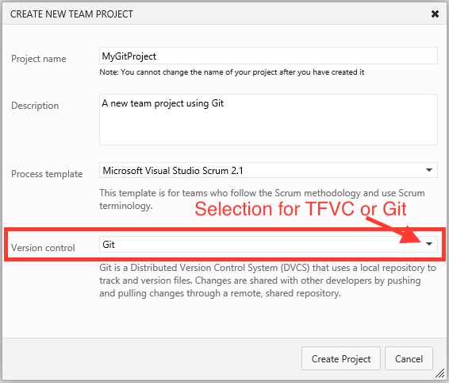Use the CLI - Cheatsheet
#create a new repository
git init
#clone a repository
git clone http://gihub.com/caffgeek/reveal.gitdevops
#get the changes from the server
git pull #basically a fetch then merge
#check what has changed
git status
#commit changes locally
git add -A #stages all changes
git commit -m "checkin message"
#push changes to git server
git push
Git is Distributed
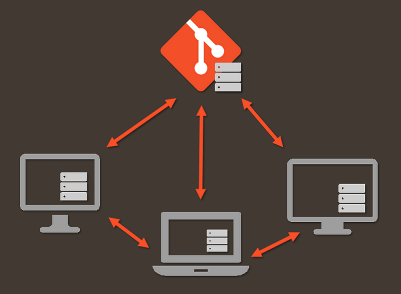
Status
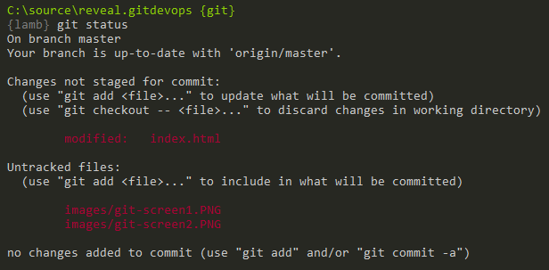
Committing - Staging
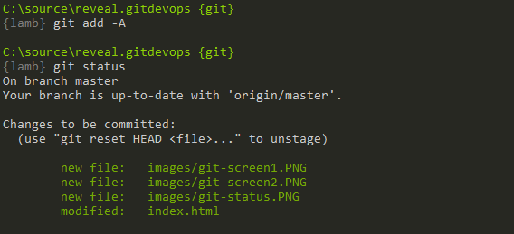
Committing - Locally
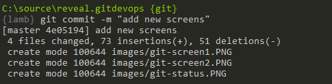
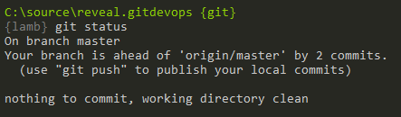
Committing - Push
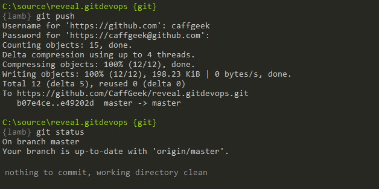
Branches
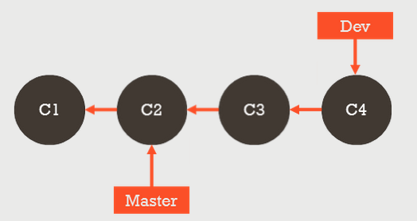
Branch Pointers
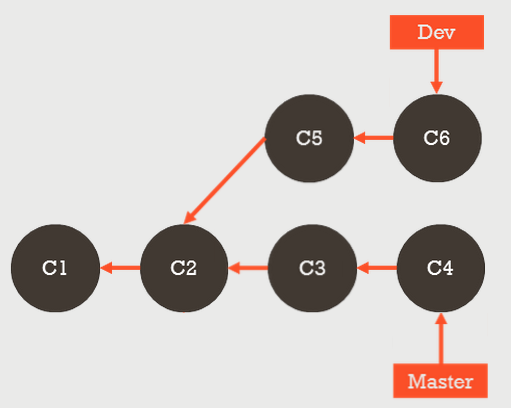
Branch Merging
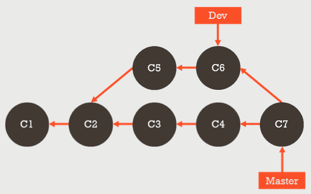
Branch Merging
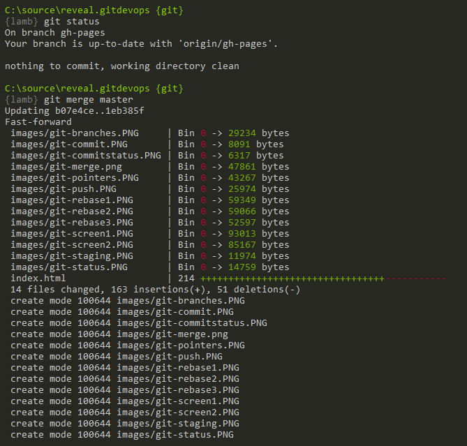
Branch Rebase
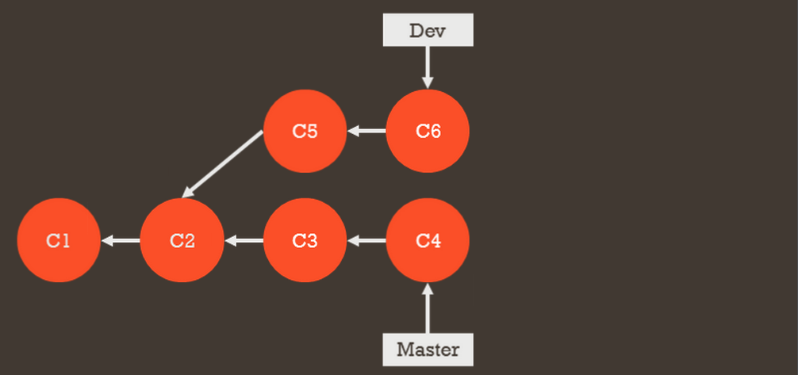
Branch Rebase
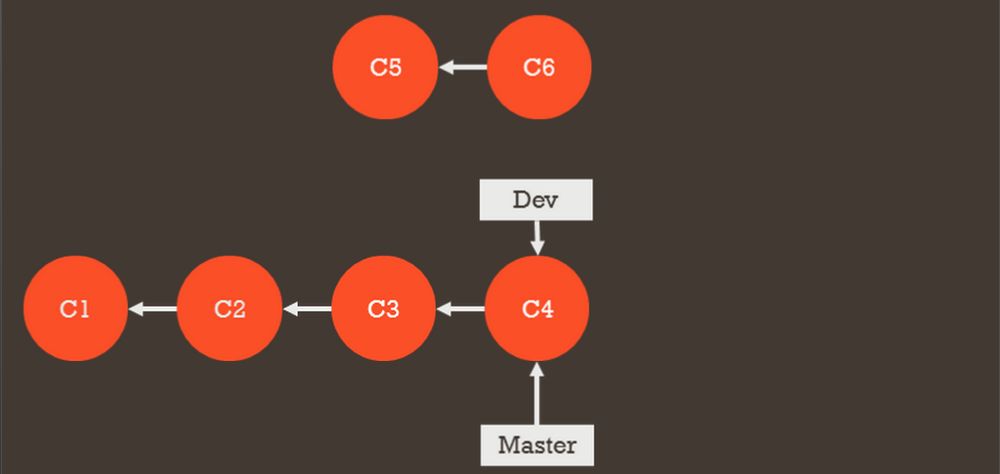
Branch Rebase
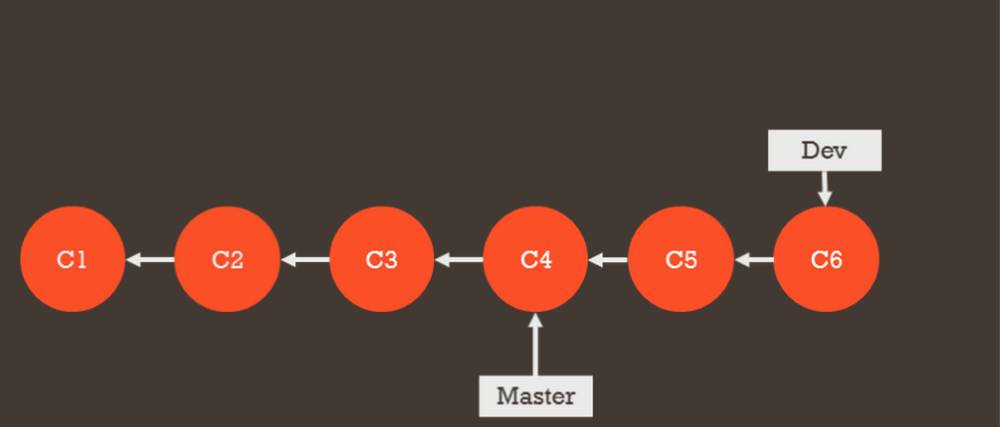
Golden Rule of Rebasing
The golden rule of git rebase is to never use it on public branches.
Resources
Tooling around Git
WebHooks
What's out there?
|
|
Travis CI

Travis CI
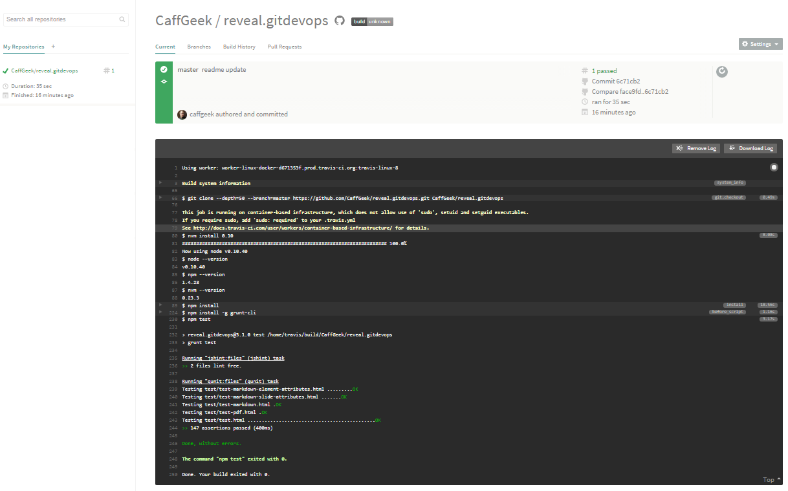
Sample .travis.yml
language: node_js
node_js:
- "0.10"
notifications:
slack: caffgeek:coKj2K5otFWUcZ6e8hY3h8Rn
Code Climate
https://codeclimate.comOverview
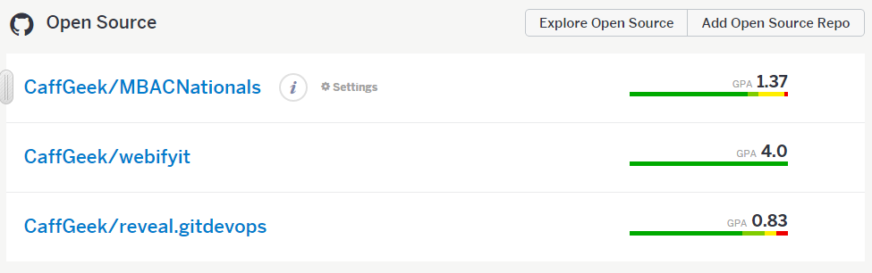
Repos at a Glance
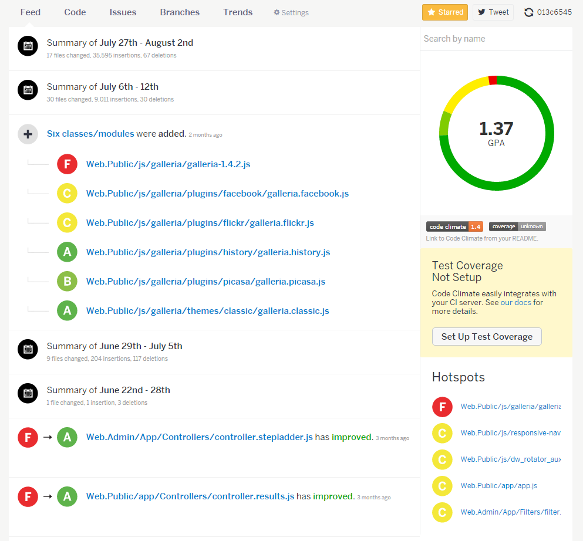
Dashboard of Repo
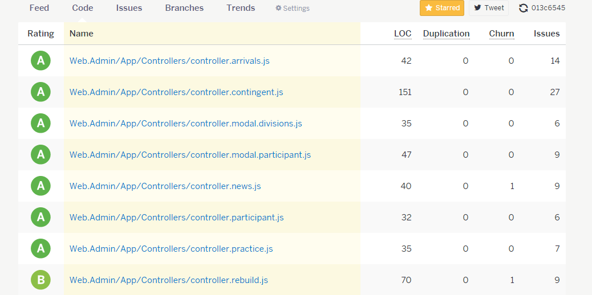
Issue Breakdown
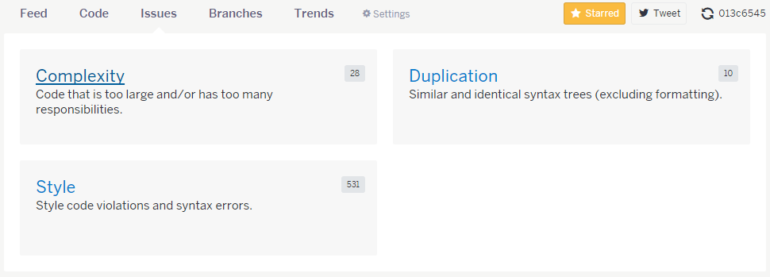
Graphs
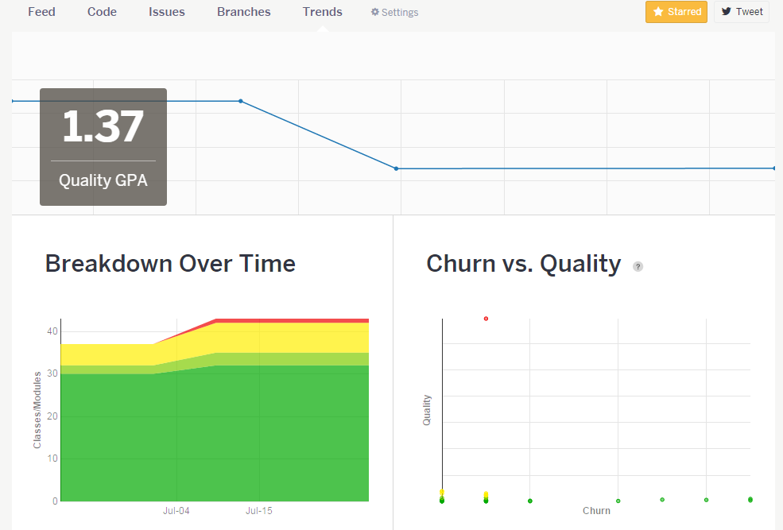
Sample
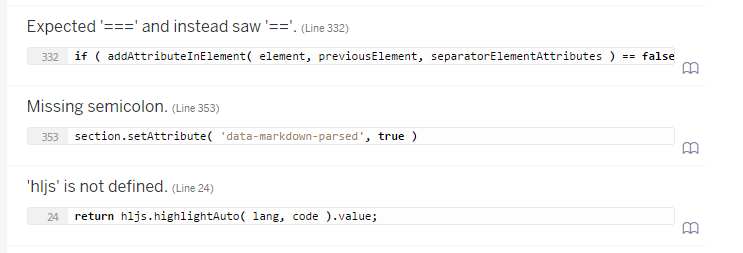
YAML
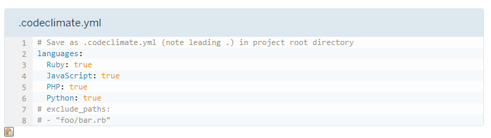
Create Tickets
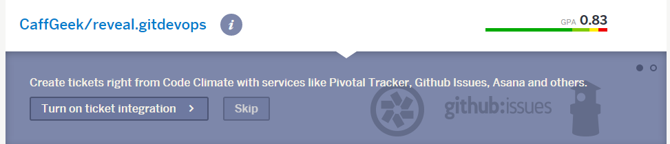
VersionEye
https://www.versioneye.com/Configure
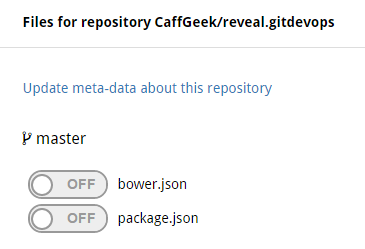
package.json
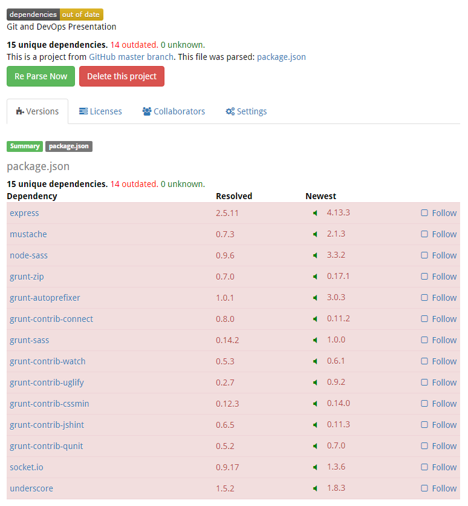
bower.json
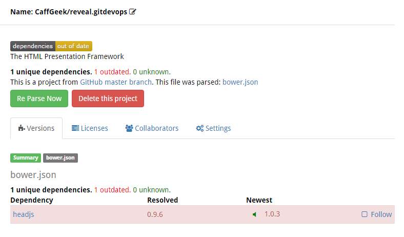
Settings
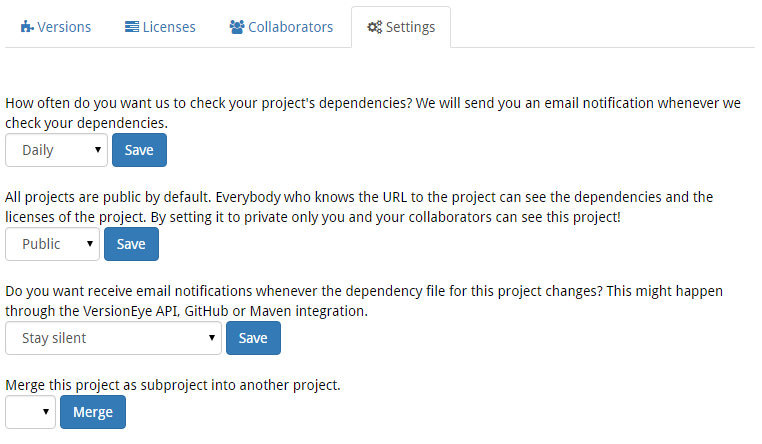
Vagrant
https://www.vagrantup.com/It's Just Code...
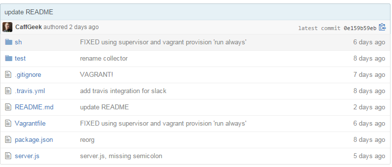
VagrantFile
# -*- mode: ruby -*-
# vi: set ft=ruby :
Vagrant.configure(2) do |config|
config.vm.box = "hashicorp/precise32"
config.vm.network "forwarded_port", guest: 1337, host: 8337
config.vm.synced_folder ".", "/vagrant"
config.vm.provision "shell", path: "sh/provision.sh"
config.vm.provision "shell", path: "sh/startup.sh", run: "always"
end
provision.sh
# Change the hostname so we can easily identify what environment we're on:
echo "nodejs-vagrant" > /etc/hostname
# Update /etc/hosts to match new hostname to avoid "Unable to resolve hostname" issue:
echo "127.0.0.1 nodejs-vagrant" >> /etc/hosts
# Use hostname command so that the new hostname takes effect immediately without a restart:
hostname nodejs-vagrant
# Install core components
apt-get update
# Install build tools
apt-get install -y make g++ git curl vim libcairo2-dev libav-tools nfs-common portmap
# Install Node.js
# Modified from https://github.com/joyent/node/wiki/Installing-Node.js-via-package-manager
apt-get update
apt-get install -y python-software-properties python g++ make
add-apt-repository -y ppa:chris-lea/node.js
apt-get update
apt-get install -y nodejs
apt-get install screen
npm install supervisor -g
startup.sh
echo "Running node-supervisor with screen"
screen -d -m /vagrant/sh/node-supervisor.sh
node-supervisor.sh
supervisor --watch /vagrant /vagrant/server.jsVagrant Up
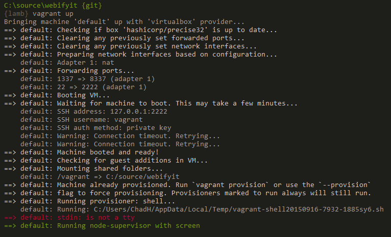
Vagrant SSH
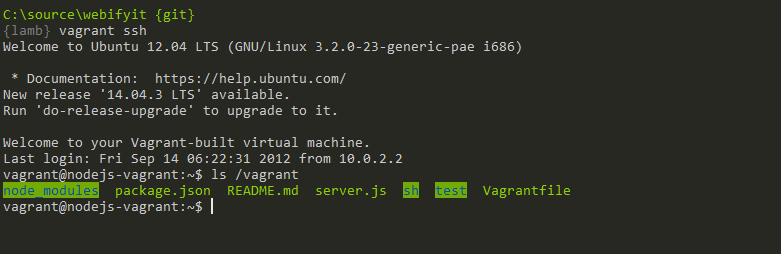